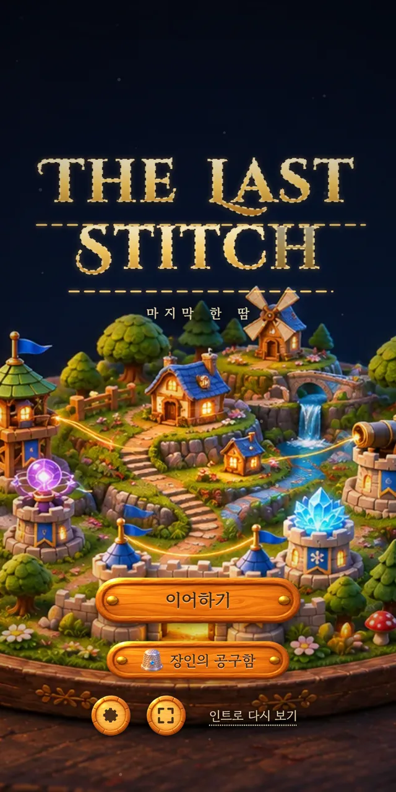
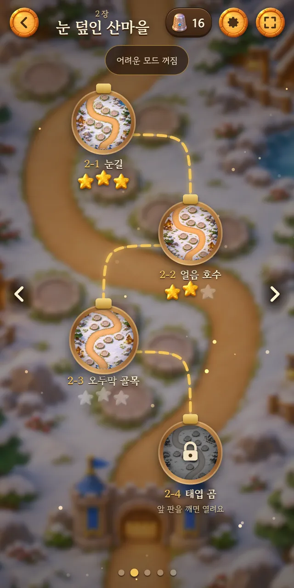
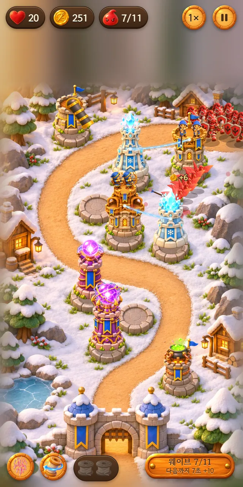
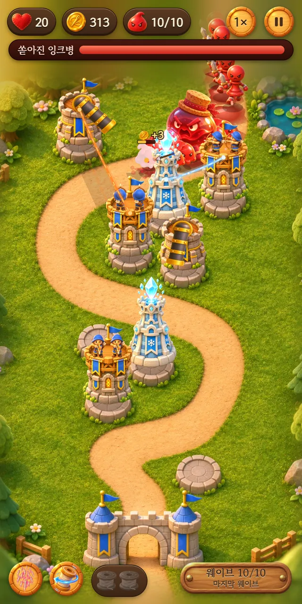

✈️ 액션 게임 · 무료 · 설치 없음
The Last Stitch
“바늘과 실로 지키는 그림 속 왕국”
- 한 판 3~4분
- 5장 · 19판
- 탑 8종
- 실로 잇는 탑
회원가입 없이 누르면 바로 시작돼요
어떤 게임인가요?
작은 왕국을 그리는 장인의 작업실. 선반마다 숲 왕국, 눈 마을, 사막 오아시스, 바닷가 항구가 놓여 있어요. 스승님이 평생 그려 온 그림들이에요.
그런데 어느 밤, 잉크병이 쓰러지면서 붉은 물감이 번지기 시작해요. 그림 속 왕국들이 붉게 물들고, 스승님은 그것을 막으려다 그림 속에 갇히고 말아요.
남은 것은 제자인 나, 그리고 스승님의 바늘과 실. 왕국을 하나씩 지킬 때마다 그곳에 숨겨진 스승님의 일기를 한 장씩 찾게 돼요. 스승님이 끝내지 못한 것은 무엇이었을까요?
이렇게 해요
- STEP 1
빈자리에 탑을 세워요
빈 받침을 누르고 탑을 골라요. 금화로 탑을 올리고, 2장부터는 3단계 탑을 두 갈래 중 하나로 키울 수 있어요.
- STEP 2
탑과 탑을 실로 이어요
탑을 꾹 눌러 다른 탑으로 끌면 실이 걸려요. 이은 두 탑은 서로의 힘을 나눠 갖고, 실이 길을 가로지르면 그 밑을 지나는 적에게 섞인 힘이 터져요.
- STEP 3
웨이브를 막아요
준비되면 「시작」. 적이 성문에 닿으면 생명이 줄어요. 다음 웨이브를 일찍 부르면 금화를 더 받아요.



🧵 실을 어떻게 걸까
- 궁수 망루, 대포탑, 얼음 수정, 번개 구슬에 독 가마솥, 바늘 석궁, 종탑, 골무 병영까지 탑은 여덟 가지예요. 2장부터 4장까지는 장마다 새 탑이 열려요.
- 불과 얼음, 번개와 독… 어떤 두 탑을 잇느냐에 따라 길 위에 생기는 힘이 달라져요.
- 장마다 마지막 판에는 쏟아진 잉크병, 태엽 곰, 모래시계 뱀 같은 큰 적이 나와요. 저마다 막는 방법이 따로 있어요.
- 판을 깨고 받은 별로 골무를 모아 「장인의 공구함」에서 탑과 실을 강하게 만들어요. 위급할 땐 손 기술 「바늘비」와 「되감기」!
이런 분께 추천해요
- 탑을 세우고 길목을 막는 디펜스 게임을 좋아하는 분
- 어떤 조합이 가장 센지 이것저것 시험해 보는 걸 좋아하는 분
- 아기자기한 미니어처 그림과 이야기가 있는 게임을 찾는 분
처음 몇 판은 게임이 하나씩 알려 줘요. 막히면 실을 다시 걸어 보세요. 길이 굽어지는 곳에 실을 가로질러 걸면 적이 그 밑을 오래 지나가요. 오른쪽 위 「1×」를 누르면 두 배 빠르게 돌아가요.
📱 어떤 기기에서 하면 좋을까요?
- 가장 좋아요휴대폰 세로로
세로 화면에 맞춰 만든 게임이에요. 손가락으로 누르고 끌어서 탑을 세우고 실을 이어요. 가로로 돌리면 가로 맵으로 바뀌어요.
- 좋아요태블릿 세로·가로 모두
화면이 커서 탑과 실이 한눈에 보여요. 세로로도 가로로도 할 수 있어요.
- 좋아요컴퓨터·노트북 마우스로
마우스로 누르고 끌어서 해요. 창이 넓으면 가로 맵으로 보여요.
오른쪽 위 메뉴(⋮ 또는 ···)에서 「다른 브라우저로 열기」를 눌러 크롬이나 사파리로 열어 주세요. 앱 안에서는 전체 화면이 안 되고 저장이 풀릴 수 있어요.
🍎 아이폰·아이패드에서는
- ① 사파리로 열기
주소를 사파리에서 열어 주세요. 세로로 들어도, 가로로 돌려도 돼요.
- ② 화면을 넓게 쓰기
아이폰 사파리는 전체 화면이 되지 않아요. 주소창 왼쪽의 가가(또는 aA) 버튼 → 「도구 막대 가리기」를 누르면 화면을 더 넓게 쓸 수 있어요.
- ③ 소리
화면을 처음 누르면 음악이 나와요. 무음 스위치가 켜져 있으면 소리가 나지 않아요. 음악·효과음 크기는 설정(톱니바퀴)에서 바꿔요.
- ④ 이어하기
깬 판과 별, 공구함은 그 기기에 저장돼서 첫 화면에 「이어하기」가 생겨요. 아이폰 사파리는 오래 들어가지 않은 사이트의 기록을 지우기도 하니 너무 오래 쉬지 마세요.
🤖 갤럭시 등 안드로이드에서는
크롬이나 삼성 인터넷으로 열면 돼요. 메뉴(⋮)에서 「홈 화면에 추가」를 해 두면 다음에 바로 열 수 있어요.
▶ 바로 해 보기
설치도, 회원가입도 필요 없어요.
라스트 스티치 시작하기game.edoori.co.kr/last-stitch/